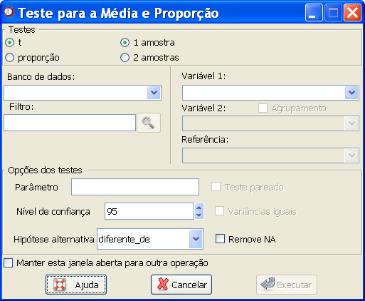

Teste
para média
Teste
para média

Figura 1. Janela "Teste para média".
Para a construção de um teste de hipóteses para média, siga os seguintes passos:
1. Selecione o tipo de teste que deseja realizar: Use "t" se desejar comparar médias; e "proporção" se desejar testar uma proporção. Além do teste, é necessário determinar se o teste será realizado para uma amostra ou se será uma comparação de médias ou proporções.
Essa seleção habilitará algumas opções e deixará desabilitadas aquelas que não serão utilizadas.
2. Selecione o banco de dados no campo "Banco de dados". Para isso, é necessário que o banco já tenha sido aberto (detalhes sobre como abrir dados ou importar dados via ODBC).
3. Selecione a variável de interesse para o teste no campo "Variável 1". Nesse campo, todas as variáveis com até dez valores diferentes serão apresentadas.
4. O campo "Variável 2" deverá ser preenchido apenas quando estiver realizando testes para duas amostras. Essa variável poderá ser interpretada de duas formas. O padrão do Epi-R prevê que cada amostra do teste esteja em uma variável diferente. Se, ao invés disso, existir uma variável que determine os dois extratos de comparação (por exemplo, morte = 0 e morte = 1), selecione-a e marque a caixa "Agrupamento".
5. Para os testes de proporção, a opção "Referência" estará habilitada. Essa opção deve ser preenchida com a categoria de referência para o teste. Por exemplo, se estiver testando a proporção de mulheres, escolha a variável referente a essa informação no campo "Variável 1" e escolha "mulher" (ou a indicação correta para a categoria) nesse campo.
6. Para selecionar apenas uma parte do banco, use o campo "Filtro". Esse filtro deverá seguir os mesmos padrões de filtro do R.
7. Determine o valor do parâmetro que será testado. O padrão do Epi-R para testes envolvendo duas amostras é 0.
8. Determinar as hipóteses do teste. A hipótese nula sempre será de igualdade (ou com o valor, ou entre as variáveis). É preciso então determinar a hipótese alternativa, ou seja, o conjunto de valores complementares àquele considerado na primeira hipótese. Quando o teste é para avaliar se uma média (ou proporção) tem ou não aquele valor, a hipótese alternativa deverá ser “diferente”. No entanto, em alguns casos pode ser mais interessante verificar se a média é apenas maior do que o valor de referência, ou menor. Quando isso acontecer, o usuário deverá optar entre as hipóteses alternativas “maior” ou “menor”.
9. Para testes utilizando duas amostras, há ainda duas opções. Uma delas se refere às variâncias das amostras, que podem ser iguais ou diferentes. O padrão do Epi-r considera variâncias iguais, mas se desejar alterar essa opção para variâncias diferentes, basta clicar na caixa "Variâncias iguais". A outra opção refere-se ao teste ser ou não pareado. Novamente, o padrão do Epi-R é considerar o teste não pareado. Para modificar essa opção, clique na caixa "Teste pareado".
Quando todas as opções tiverem sido preenchidas, clique em "Executar". Para realizar sucessivos testes usando essa janela, marque a opção "Manter essa janela aberta para outra operação". Com isso, o resultado desejado aparecerá no campo "Saída de resultados" da janela principal do Epi-R, mas essa janela não será fechada, evitando o retrabalho de acessá-la.